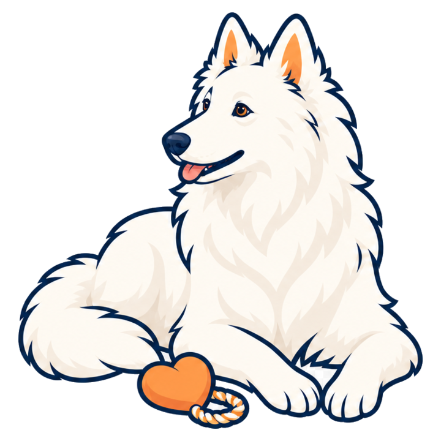
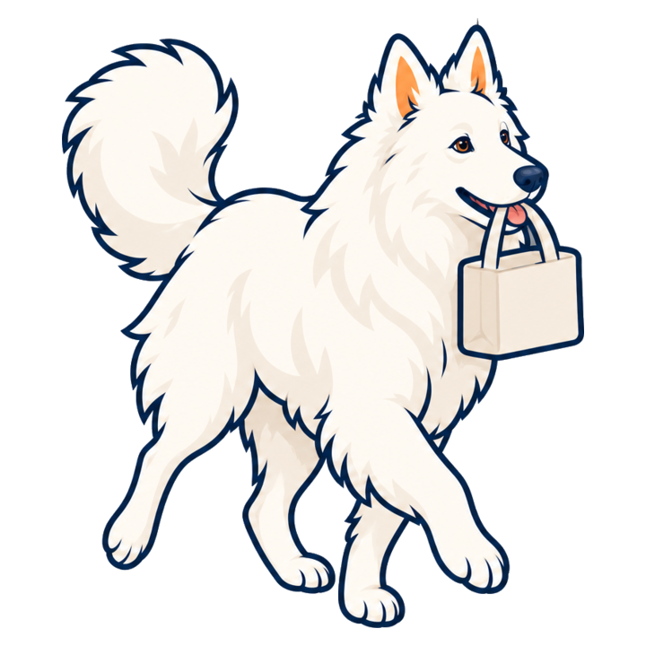

Get Pawse
Pawse is free and open source. Choose either option — the app is exactly the same.

Donate Support continued development, testing, and future releases through Ko-fi. Donate on Ko-fi
Download now Download Pawse 0.1.1 directly. No donation, account, or email required. Download DMGRequires macOS 14 or later. Version 0.1.1 is not Apple-notarized yet, so the first launch may require Control-clicking Pawse and choosing Open.